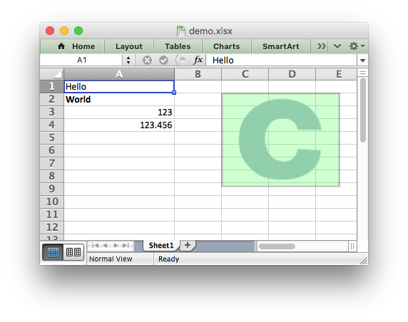

Libxlsxwriter is a C library for creating Excel XLSX files.

(Sample code to create the above spreadsheet.)
libxlsxwriter
Libxlsxwriter is a C library that can be used to write text, numbers, formulas and hyperlinks to multiple worksheets in an Excel 2007+ XLSX file. It supports features such as:
- 100% compatible Excel XLSX files.
- Full Excel formatting.
- Merged cells.
- Defined names.
- Autofilters.
- Charts.
- Worksheet PNG/JPEG images.
- Memory optimization mode for writing large files.
- Source code available on GitHub.
- FreeBSD License.
- ANSI C.
- Works with GCC 4.x, GCC 5.x, Clang, Xcode, MSVC 2015, ICC, TCC, MinGW, MingGW-w64/32.
- Works on Linux, FreeBSD, OS X, iOS and Windows. Also with Mingw MSYS/MSYS2 and Cygwin.
- Compiles for 32 and 64 bit.
- The only dependency is on
zlib.
This document explains how to use the libxlsxwriter library. See the following sections for more information: